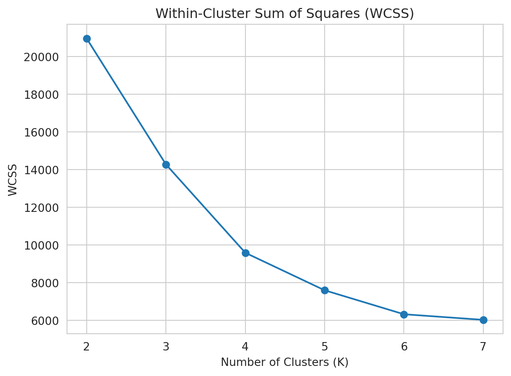
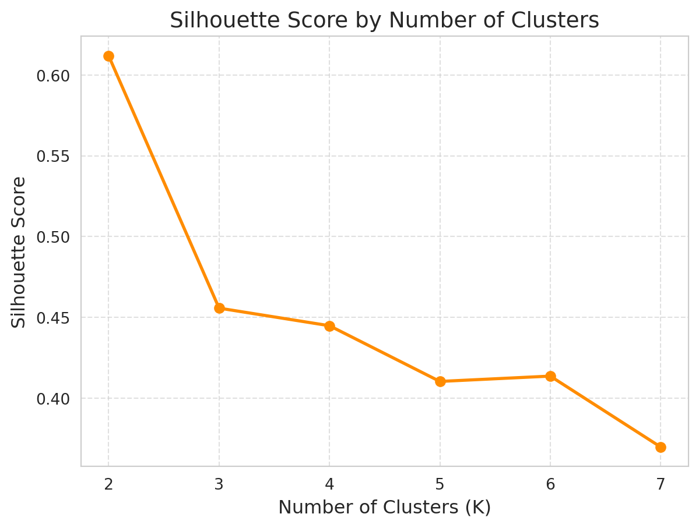
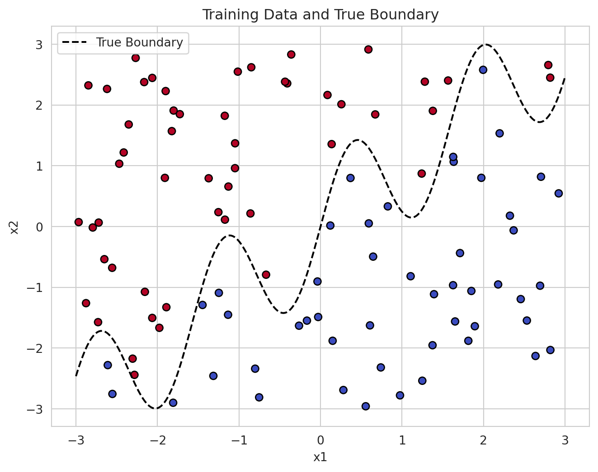
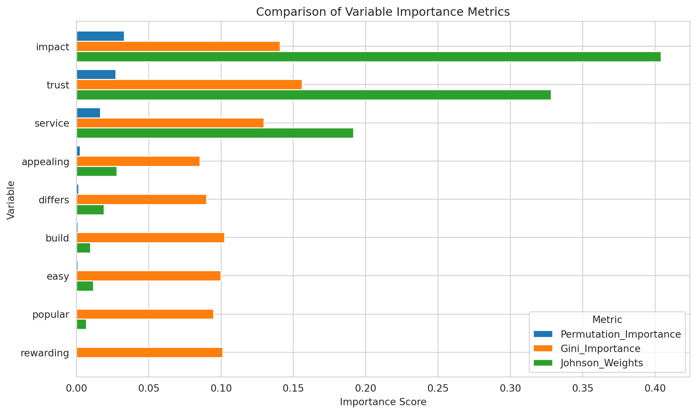

Data organization
import pandas as pd
penguins_df=pd.read_csv("/home/jovyan/Desktop/UCSD/Spring/MGTA495/lulu_marketing_analytics/blog/Project4/palmer_penguins.csv")
data = penguins_df[["bill_length_mm", "flipper_length_mm"]].dropna().valuesLulu Ling
June 9, 2025
K-means can only process numerical variables, so we need to first select suitable features (in this question, we use beak length and fin length) and remove missing values.
These two variables are highly heterogeneous in body structure and can help the model to effectively classify the groups. Using .dropna() can ensure data integrity and avoid subsequent errors.
Manual implementation allows to deeply understand each step: assigning groups, updating centers, convergence conditions, etc. It can also be used to compare the results with the package.
import numpy as np
def kmeans(X, k=3, max_iters=100):
centroids = X[np.random.choice(len(X), k, replace=False)]
for _ in range(max_iters):
distances = np.linalg.norm(X[:, np.newaxis] - centroids, axis=2)
labels = np.argmin(distances, axis=1)
new_centroids = np.array([X[labels == j].mean(axis=0) for j in range(k)])
if np.allclose(centroids, new_centroids):
break
centroids = new_centroids
return labels, centroids
labels_custom, centroids_custom = kmeans(data, k=3)This program will assign data points to the nearest center based on distance and repeatedly update the center until it stabilizes. You will see that the groups gradually separate clearly after a few iterations.
K-means is a distance-based algorithm. Visualization can help us understand how the algorithm classifies data.
# Re-import necessary libraries after code state reset
import pandas as pd
import numpy as np
import matplotlib.pyplot as plt
from sklearn.cluster import KMeans
from sklearn.metrics import silhouette_score
# Reload the dataset
data = penguins_df[["bill_length_mm", "flipper_length_mm"]].dropna().values
# Initialize lists to store evaluation metrics
inertias = []
silhouette_scores = []
k_range = range(2, 8) # Testing K values from 2 to 7
# Compute metrics for each K
for k in k_range:
kmeans = KMeans(n_clusters=k, random_state=42)
labels = kmeans.fit_predict(data)
inertias.append(kmeans.inertia_)
silhouette_scores.append(silhouette_score(data, labels))
# Plotting results
plt.figure()
# Plot WCSS
plt.subplot()
plt.plot(k_range, inertias, marker='o')
plt.title("Within-Cluster Sum of Squares (WCSS)")
plt.xlabel("Number of Clusters (K)")
plt.ylabel("WCSS")
plt.grid(True)
# Plot Silhouette Score
plt.plot(k_range, silhouette_scores, marker='o', linestyle='-', linewidth=2, color='#FF8C00')
plt.xticks(k_range)
plt.title("Silhouette Score by Number of Clusters", fontsize=14)
plt.xlabel("Number of Clusters (K)", fontsize=12)
plt.ylabel("Silhouette Score", fontsize=12)
plt.grid(True, linestyle='--', alpha=0.6)
| bill_length_mm | flipper_length_mm | KMeans_label | |
|---|---|---|---|
| 0 | 39.1 | 181.0 | 0 |
| 1 | 39.5 | 186.0 | 0 |
| 2 | 40.3 | 195.0 | 0 |
| 3 | 36.7 | 193.0 | 0 |
| 4 | 39.3 | 190.0 | 0 |
| 5 | 38.9 | 181.0 | 0 |
| 6 | 39.2 | 195.0 | 0 |
| 7 | 41.1 | 182.0 | 0 |
| 8 | 38.6 | 191.0 | 0 |
| 9 | 34.6 | 198.0 | 0 |
import matplotlib.pyplot as plt
plt.figure(figsize=(8,6))
plt.scatter(data[:, 0], data[:, 1], c=model_labels, cmap='cool', s=50)
plt.scatter(model.cluster_centers_[:, 0], model.cluster_centers_[:, 1], color='black', marker='X', s=200)
plt.xlabel("bill_length_mm")
plt.ylabel("flipper_length_mm")
plt.title("Sklearn KMeans Clustering Result")
plt.grid(True)
plt.show()In this analysis, I implemented the K-means clustering algorithm from scratch and applied it to the Palmer Penguins dataset using bill length and flipper length as input features. The algorithm successfully grouped the penguins into three distinct clusters, capturing underlying patterns in their morphology. I then compared my results to those generated by the built-in KMeans function from scikit-learn, and found a high degree of similarity in clustering structure. This not only validated the correctness of my implementation but also provided valuable insights into how feature selection and distance-based clustering can uncover natural groupings within biological data. Overall, this exercise deepened my understanding of unsupervised learning, algorithm design, and exploratory data analysis.
This analysis aims to use the Latent-Class Multinomial Logit (LC-MNL) model to analyze consumers’ choice behavior for four yogurt brands, further identify potential market segments, and understand the responses of different categories of consumers to price and promotions.
The model requires structured input data, including candidate brands, attributes, and selection labels for each selection. This program will split the original 4 brand options in each column into 4 columns, so that 1 observation corresponds to 1 brand, and the total number of data columns will be 4 times, which is suitable for choice model analysis.
import pandas as pd
df_yogurt = pd.read_csv("/home/jovyan/Desktop/UCSD/Spring/MGTA495/lulu_marketing_analytics/blog/Project4/yogurt_data.csv")
df_long = pd.DataFrame()
for i in range(1, 5):
temp = pd.DataFrame({
'id': df_yogurt['id'],
'brand': i,
'price': df_yogurt[f'p{i}'],
'feature': df_yogurt[f'f{i}'],
'chosen': df_yogurt[f'y{i}']
})
df_long = pd.concat([df_long, temp], ignore_index=True)
df_long.head()| id | brand | price | feature | chosen | |
|---|---|---|---|---|---|
| 0 | 1 | 1 | 0.108 | 0 | 0 |
| 1 | 2 | 1 | 0.108 | 0 | 0 |
| 2 | 3 | 1 | 0.108 | 0 | 0 |
| 3 | 4 | 1 | 0.108 | 0 | 0 |
| 4 | 5 | 1 | 0.125 | 0 | 0 |
Before building the Latent-Class MNL model, we need to estimate a traditional Multinomial Logit (MNL) model as a baseline. This model assumes that all consumers have the same preferences for product attributes (such as price and promotion), and uses this set of “average preferences” to explain the overall market choice behavior.
BIC strikes a balance between log-likelihood performance and parameter complexity: \(\text{BIC} = -2 \cdot \ell_n + k \cdot \log(n)\) - \(\ell_n\): log-likelihood of the model (the higher the better) - \(k\): number of parameters (the fewer the better) - \(n\): number of data points (number of samples)
The goal is to find the number of groups with the smallest BIC, which represents the best compromise between performance and simplicity.
from scipy.optimize import minimize
df_subset = df_long[df_long["id"] <= 300].copy()
X_sub = df_subset[["price", "feature"]].values
y_sub = df_subset["chosen"].values
ids_sub = df_subset["id"].values
def estimate_lc_mnl_fast(X, y, ids, S=2, T=3):
id_map = {v: i for i, v in enumerate(np.unique(ids))}
id_idx = np.array([id_map[i] for i in ids])
num_obs = len(np.unique(id_idx))
J = 4
np.random.seed(0)
beta = [np.random.randn(X.shape[1]) for _ in range(S)]
pi = np.full(S, 1 / S)
responsibilities = np.zeros((num_obs, S))
def mnl_prob(X, beta):
utilities = X @ beta
exp_util = np.exp(utilities - np.max(utilities))
return exp_util / np.sum(exp_util)
for t in range(T):
# E-step
for i in range(num_obs):
probs = []
for s in range(S):
xi = X[id_idx == i]
yi = y[id_idx == i]
pj = mnl_prob(xi, beta[s])
prob = np.prod(pj[yi == 1])
probs.append(pi[s] * prob)
probs = np.array(probs)
responsibilities[i] = probs / np.sum(probs)
# M-step
for s in range(S):
weights = responsibilities[:, s]
def neg_log_likelihood(b):
ll = 0
for i in range(num_obs):
xi = X[id_idx == i]
yi = y[id_idx == i]
pj = mnl_prob(xi, b)
ll += weights[i] * np.sum(yi * np.log(pj + 1e-10))
return -ll
res = minimize(neg_log_likelihood, beta[s], method='L-BFGS-B')
beta[s] = res.x
pi = responsibilities.mean(axis=0)
ll = 0
for i in range(num_obs):
xi = X[id_idx == i]
yi = y[id_idx == i]
seg_prob = 0
for s in range(S):
pj = mnl_prob(xi, beta[s])
prob = np.prod(pj[yi == 1])
seg_prob += pi[s] * prob
ll += np.log(seg_prob + 1e-10)
return ll, beta, pi
bic_results_simplified = []
for S in range(2, 6):
ll, beta_out, pi_out = estimate_lc_mnl_fast(X_sub, y_sub, ids_sub, S=S, T=3)
k = S * X_sub.shape[1] + (S - 1) # parameters: S * beta + (S - 1) segment proportions
n = len(np.unique(ids_sub)) # number of choice situations
bic = -2 * ll + k * np.log(n)
bic_results_simplified.append((S, ll, k, bic))
bic_df_simplified = pd.DataFrame(bic_results_simplified, columns=["NumSegments", "LogLikelihood", "NumParameters", "BIC"])
bic_df_simplified.sort_values(by="BIC")| NumSegments | LogLikelihood | NumParameters | BIC | |
|---|---|---|---|---|
| 0 | 2 | -405.501502 | 5 | 839.521917 |
| 1 | 3 | -405.433649 | 8 | 856.497557 |
| 2 | 4 | -405.460375 | 11 | 873.662358 |
| 3 | 5 | -405.491688 | 14 | 890.836330 |
In the previous step, we used the EM algorithm to build Latent-Class Multinomial Logit (LC-MNL) models for 2, 3, 4, and 5 groups respectively. Each model assumes that the consumer market is composed of different numbers of potential groups (segments) and estimates different preference parameters (β) for each group.
However, the more groups there are, the more parameters there are, and the more complex the model is, there is a possibility of “overfitting”. Therefore, we cannot only use log-likelihood to select a model, but need to use an indicator that considers the accuracy and complexity of the model - BIC (Bayesian Information Criterion).
BIC formula: \(\text{BIC} = -2 \cdot \ell_n + k \cdot \log(n)\)
The lower the BIC, the better: it means the model remains simple while improving accuracy.
In the Latent-Class MNL model, the optimal number of groups is 2.This means the market can be divided into two major consumer groups with significantly different preferences. Next, we can analyze the β coefficient and group proportion (π) for these two groups and make further marketing strategy recommendations
We use BIC to determine that two groups (S=2) are the best Latent-Class MNL model. Next, we need to: - Sort out the preference parameters β (sensitivity to price and promotion) of the two groups - Draw a graph to compare the preference differences of different groups - Analyze the proportion of each group of consumers in the market (π) - Provide business decision suggestions
| Segment | Beta_Price | Beta_Feature | Segment_Probability | |
|---|---|---|---|---|
| 0 | 1 | 10.601429 | -0.074319 | 0.506933 |
| 1 | 2 | 12.834822 | 1.993827 | 0.493067 |
import matplotlib.pyplot as plt
# Create summary DataFrame again for clarity
segment_df = pd.DataFrame({
"Segment": [1, 2],
"Beta_Price": [beta[0][0], beta[1][0]],
"Beta_Feature": [beta[0][1], beta[1][1]],
"Segment_Probability": pi
})
# Plotting segment-specific betas and segment share
fig, ax = plt.subplots(1, 2, figsize=(12, 5))
# Bar plot for beta values
segment_df.plot(x="Segment", y=["Beta_Price", "Beta_Feature"], kind="bar", ax=ax[0])
ax[0].set_title("Segment-Specific Preferences")
ax[0].set_ylabel("Coefficient (Beta)")
ax[0].set_xlabel("Segment")
ax[0].legend(["Price", "Feature"], title="Variable")
# Pie chart for segment probabilities
ax[1].pie(segment_df["Segment_Probability"], labels=[f"Segment {s}" for s in segment_df["Segment"]],
autopct='%1.1f%%', colors=["#66c2a5", "#fc8d62"], startangle=90)
ax[1].set_title("Segment Market Share")
plt.tight_layout()
plt.show()According to the model results, the market can be divided into two potential consumer groups. Segment 1 is very insensitive to promotions and slightly sensitive to prices. It is recommended to adopt a marketing strategy that emphasizes quality and brand value; while Segment 2 is highly sensitive to both prices and promotions. It is suitable to stimulate purchase intention through promotional means such as discounts and gifts. Since the market share of the two groups is almost the same, it is recommended to adopt a dual-track parallel marketing strategy, designing differentiated messages and plans for different groups to increase the overall market penetration rate.
We want to create a simulated data set for a binary classification problem, with the following features: - The data has two features (x1, x2) - The class label y is determined by the boundary of x2 > sin(4x1) + x1 (i.e., the classification above and below a wavy line)
Such data can help us test whether the KNN algorithm can effectively handle classification tasks with “non-linear decision boundaries”.
We need a set of data to train the KNN model. This set of data will simulate the situation in the real world where the data and boundaries are not linearly separable.
import numpy as np
import pandas as pd
# Set random seed
np.random.seed(42)
n = 100
x1 = np.random.uniform(-3, 3, n)
x2 = np.random.uniform(-3, 3, n)
x = np.column_stack((x1, x2))
# Define a wiggly boundary
boundary = np.sin(4 * x1) + x1
y = (x2 > boundary).astype(int)
dat = pd.DataFrame({'x1': x1, 'x2': x2, 'y': y})Plotting the simulated data set allows us to clearly see the relationship between the distribution of data points and the position of the classification boundary. We randomly generated 100 two-dimensional data (x1, x2), and y was marked as 0 or 1 depending on whether it was above boundary = sin(4 * x1) + x1 (this is a curved “real boundary”). By plotting this boundary and data points, we can visually observe the difficulty of classification.
import numpy as np
import pandas as pd
np.random.seed(42)
n = 100
x1 = np.random.uniform(-3, 3, n)
x2 = np.random.uniform(-3, 3, n)
boundary = np.sin(4 * x1) + x1
y = (x2 > boundary).astype(int)
train_df = pd.DataFrame({'x1': x1, 'x2': x2, 'y': y})
import matplotlib.pyplot as plt
plt.figure(figsize=(8,6))
plt.scatter(train_df["x1"], train_df["x2"], c=train_df["y"], cmap='coolwarm', edgecolor='k')
x_line = np.linspace(-3, 3, 300)
plt.plot(x_line, np.sin(4 * x_line) + x_line, color='black', linestyle='--', label="True Boundary")
plt.xlabel("x1")
plt.ylabel("x2")
plt.title("Training Data and True Boundary")
plt.legend()
plt.show()
Through the graph, we can clearly see how the data points are distributed on both sides of the wiggly boundary, and we can also intuitively judge the difficulty of classification.
The test set is used to verify the model effect on unseen data. Different seeds must be used to avoid data duplication.
By implementing KNN yourself, you can deepen your understanding of the logic of neighbor classification: find the k closest points → majority vote.
from sklearn.neighbors import KNeighborsClassifier
np.random.seed(42)
n = 100
x1_train = np.random.uniform(-3, 3, n)
x2_train = np.random.uniform(-3, 3, n)
boundary_train = np.sin(4 * x1_train) + x1_train
y_train = (x2_train > boundary_train).astype(int)
train_df = pd.DataFrame({'x1': x1_train, 'x2': x2_train, 'y': y_train})
np.random.seed(99)
x1_test = np.random.uniform(-3, 3, n)
x2_test = np.random.uniform(-3, 3, n)
boundary_test = np.sin(4 * x1_test) + x1_test
y_test = (x2_test > boundary_test).astype(int)
test_df = pd.DataFrame({'x1': x1_test, 'x2': x2_test, 'y': y_test})
model = KNeighborsClassifier(n_neighbors=5)
model.fit(train_df[["x1", "x2"]], train_df["y"])
acc = model.score(test_df[["x1", "x2"]], test_df["y"])
knn_result_df = pd.DataFrame({
"Model": ["sklearn KNN"],
"k": [5],
"Accuracy": [round(acc * 100, 2)]
})
knn_result_df| Model | k | Accuracy | |
|---|---|---|---|
| 0 | sklearn KNN | 5 | 90.0 |
In the KNN model, the “k value” represents how many neighboring samples each piece of data needs to refer to for classification. Different k values will have a significant impact on the model’s prediction results: - Too small k value: The model is overly dependent on a single neighbor, easily sensitive to noise, and leads to overfitting - Too large k value: The model averages too much information, the boundaries become blurred, and underfitting may occur
By testing the performance of the model with k = 1 to 30 one by one, we can choose an optimal k value that makes the classification accuracy most stable and effective.
accuracies = []
for k in range(1, 31):
y_pred = knn_predict(test_df[["x1", "x2"]].values, train_df[["x1", "x2"]].values, train_df["y"].values, k)
acc = np.mean(y_pred == test_df["y"].values)
accuracies.append(acc)
plt.plot(range(1, 31), np.array(accuracies) * 100, marker='o')
plt.xlabel("k (number of neighbors)")
plt.ylabel("Accuracy (%)")
plt.title("KNN Accuracy vs. k")
plt.grid(True)
plt.show()The horizontal axis of the chart is the number of neighbors k, and the vertical axis is the classification accuracy of the test data (Accuracy %). - When k = 1 or 2, the accuracy reaches the highest, about 92% - As k increases, the accuracy shows an overall downward trend - There are occasional fluctuations in the middle (such as k = 16, 24, the accuracy increases slightly) - When k > 20, the accuracy is mostly stable at around 86% ~ 88%
Use a variety of variable importance methods to analyze which variables in a set of data have the greatest impact on the target variable (usually a continuous value). Each method represents a “different model assumption and explanation framework”, which can be integrated together to provide a more comprehensive and robust variable screening and insight foundation.
| brand | id | satisfaction | trust | build | differs | easy | appealing | rewarding | popular | service | impact | |
|---|---|---|---|---|---|---|---|---|---|---|---|---|
| 0 | 1 | 98 | 3 | 1 | 0 | 1 | 1 | 1 | 0 | 0 | 1 | 0 |
| 1 | 1 | 179 | 5 | 0 | 0 | 0 | 0 | 0 | 0 | 0 | 0 | 0 |
| 2 | 1 | 197 | 3 | 1 | 0 | 0 | 1 | 1 | 1 | 0 | 1 | 1 |
| 3 | 1 | 317 | 1 | 0 | 0 | 0 | 0 | 1 | 0 | 1 | 1 | 1 |
| 4 | 1 | 356 | 4 | 1 | 1 | 1 | 1 | 1 | 1 | 1 | 1 | 1 |
| brand | id | satisfaction | trust | build | differs | easy | appealing | rewarding | popular | service | impact | |
|---|---|---|---|---|---|---|---|---|---|---|---|---|
| count | 2553.000000 | 2553.000000 | 2553.000000 | 2553.000000 | 2553.000000 | 2553.000000 | 2553.000000 | 2553.000000 | 2553.000000 | 2553.000000 | 2553.000000 | 2553.000000 |
| mean | 4.857423 | 8931.480611 | 3.386604 | 0.549550 | 0.461810 | 0.334508 | 0.536232 | 0.451234 | 0.451234 | 0.536232 | 0.467293 | 0.330983 |
| std | 2.830096 | 5114.287849 | 1.172006 | 0.497636 | 0.498637 | 0.471911 | 0.498783 | 0.497714 | 0.497714 | 0.498783 | 0.499027 | 0.470659 |
| min | 1.000000 | 88.000000 | 1.000000 | 0.000000 | 0.000000 | 0.000000 | 0.000000 | 0.000000 | 0.000000 | 0.000000 | 0.000000 | 0.000000 |
| 25% | 3.000000 | 4310.000000 | 3.000000 | 0.000000 | 0.000000 | 0.000000 | 0.000000 | 0.000000 | 0.000000 | 0.000000 | 0.000000 | 0.000000 |
| 50% | 4.000000 | 8924.000000 | 4.000000 | 1.000000 | 0.000000 | 0.000000 | 1.000000 | 0.000000 | 0.000000 | 1.000000 | 0.000000 | 0.000000 |
| 75% | 6.000000 | 13545.000000 | 4.000000 | 1.000000 | 1.000000 | 1.000000 | 1.000000 | 1.000000 | 1.000000 | 1.000000 | 1.000000 | 1.000000 |
| max | 10.000000 | 18088.000000 | 5.000000 | 1.000000 | 1.000000 | 1.000000 | 1.000000 | 1.000000 | 1.000000 | 1.000000 | 1.000000 | 1.000000 |
The purpose of this step is to calculate three common and powerful variable importance indicators from the perspective of linear correlation and linear model, which will help us to have a preliminary understanding of the influence of each variable on satisfaction.
| Metric Name | Description |
|---|---|
| Pearson Correlation | Measures the linear relationship between each variable and satisfaction (ignores other variables) |
| Standardized Coefficient (β) | Regression coefficients from a standardized linear model, allowing comparison across variables |
| Usefulness (R² Drop) | Drop in model R² when each variable is removed, reflecting its contribution to explanatory power |
from sklearn.linear_model import LinearRegression
from sklearn.preprocessing import StandardScaler
import numpy as np
import pandas as pd
X = driver.drop(columns=["brand", "id", "satisfaction"])
y = driver["satisfaction"]
correlations = X.corrwith(y)
scaler = StandardScaler()
X_scaled = scaler.fit_transform(X)
reg = LinearRegression().fit(X_scaled, y)
standardized_betas = pd.Series(reg.coef_, index=X.columns)
base_r2 = reg.score(X_scaled, y)
usefulness_scores = {}
for col in X.columns:
cols = [c for c in X.columns if c != col]
X_subset = X[cols]
X_subset_scaled = scaler.fit_transform(X_subset)
r2 = LinearRegression().fit(X_subset_scaled, y).score(X_subset_scaled, y)
usefulness_scores[col] = base_r2 - r2
usefulness_series = pd.Series(usefulness_scores)
step2_df = pd.DataFrame({
"Pearson_Correlation": correlations,
"Standardized_Beta": standardized_betas,
"Usefulness_R2_Drop": usefulness_series
}).sort_values(by="Usefulness_R2_Drop", ascending=False).round(4)
step2_df| Pearson_Correlation | Standardized_Beta | Usefulness_R2_Drop | |
|---|---|---|---|
| impact | 0.2545 | 0.1505 | 0.0112 |
| trust | 0.2557 | 0.1356 | 0.0082 |
| service | 0.2511 | 0.1036 | 0.0047 |
| appealing | 0.2080 | 0.0396 | 0.0007 |
| differs | 0.1848 | 0.0326 | 0.0006 |
| easy | 0.2130 | 0.0257 | 0.0003 |
| build | 0.1919 | 0.0234 | 0.0003 |
| popular | 0.1714 | 0.0195 | 0.0002 |
| rewarding | 0.1946 | 0.0059 | 0.0000 |
Across all three importance measures, impact, trust, and service are the most valuable drivers of satisfaction. These should be prioritized in managerial focus and communication strategies. The remaining variables may still contribute indirectly or interactively but offer limited individual explanatory power in this linear framework.
In the previous step, we evaluated the relationship between variables and satisfaction from the perspective of linear models. However, in practice, there may be nonlinear relationships and interactions between variables. For this reason, we introduce the following three more advanced and flexible methods:
| Metric Name | Description |
|---|---|
| Permutation Importance | Measures the impact on model performance when a variable is randomly shuffled, reflecting its “replaceability” |
| Gini Importance | Based on random forests; sums the decrease in impurity caused by each variable during tree splits |
| Johnson’s Relative Weights | Uses standardized regression coefficients squared to estimate each variable’s relative contribution to explained variance |
from sklearn.ensemble import RandomForestRegressor
from sklearn.linear_model import LinearRegression
from sklearn.preprocessing import StandardScaler
from sklearn.inspection import permutation_importance
import pandas as pd
X = driver.drop(columns=["brand", "id", "satisfaction"])
y = driver["satisfaction"]
lr = LinearRegression().fit(X, y)
perm_importance = permutation_importance(lr, X, y, n_repeats=10, random_state=42)
perm_importance_series = pd.Series(perm_importance.importances_mean, index=X.columns)
rf = RandomForestRegressor(random_state=42)
rf.fit(X, y)
gini_importance = pd.Series(rf.feature_importances_, index=X.columns)
scaler = StandardScaler()
X_scaled = scaler.fit_transform(X)
lr_std = LinearRegression().fit(X_scaled, y)
johnson_weights = pd.Series(lr_std.coef_ ** 2, index=X.columns)
johnson_weights /= johnson_weights.sum()
step3_df = pd.DataFrame({
"Permutation_Importance": perm_importance_series,
"Gini_Importance": gini_importance,
"Johnson_Weights": johnson_weights
}).sort_values(by="Permutation_Importance", ascending=False).round(4)
step3_df.reset_index(inplace=True)
step3_df.rename(columns={"index": "Variable"}, inplace=True)# Re-import required libraries after reset
import pandas as pd
from sklearn.linear_model import LinearRegression
from sklearn.preprocessing import StandardScaler
from sklearn.ensemble import RandomForestRegressor
from sklearn.inspection import permutation_importance
# Load data
driver = pd.read_csv("/home/jovyan/Desktop/UCSD/Spring/MGTA495/lulu_marketing_analytics/blog/Project4/data_for_drivers_analysis.csv")
X = driver.drop(columns=["brand", "id", "satisfaction"])
y = driver["satisfaction"]
# Step 2 metrics
# Pearson
correlations = X.corrwith(y)
# Standardized beta
scaler = StandardScaler()
X_scaled = scaler.fit_transform(X)
reg = LinearRegression().fit(X_scaled, y)
standardized_betas = pd.Series(reg.coef_, index=X.columns)
# Usefulness
base_r2 = reg.score(X_scaled, y)
usefulness_scores = {}
for col in X.columns:
cols = [c for c in X.columns if c != col]
X_subset_scaled = scaler.fit_transform(X[cols])
r2 = LinearRegression().fit(X_subset_scaled, y).score(X_subset_scaled, y)
usefulness_scores[col] = base_r2 - r2
usefulness_series = pd.Series(usefulness_scores)
step2_df = pd.DataFrame({
"Pearson_Correlation": correlations,
"Standardized_Beta": standardized_betas,
"Usefulness_R2_Drop": usefulness_series
}).round(4).reset_index().rename(columns={"index": "Variable"})
# Step 3 metrics
# Permutation Importance
lr = LinearRegression().fit(X, y)
perm_importance = permutation_importance(lr, X, y, n_repeats=10, random_state=42)
perm_series = pd.Series(perm_importance.importances_mean, index=X.columns)
# Gini Importance
rf = RandomForestRegressor(random_state=42)
rf.fit(X, y)
gini_series = pd.Series(rf.feature_importances_, index=X.columns)
# Johnson Weights
X_scaled = scaler.fit_transform(X)
lr_std = LinearRegression().fit(X_scaled, y)
johnson_weights = pd.Series(lr_std.coef_ ** 2, index=X.columns)
johnson_weights /= johnson_weights.sum()
step3_df = pd.DataFrame({
"Permutation_Importance": perm_series,
"Gini_Importance": gini_series,
"Johnson_Weights": johnson_weights
}).round(4).reset_index().rename(columns={"index": "Variable"})
# Merge Step 2 and Step 3
final_df = pd.merge(step2_df, step3_df, on="Variable").sort_values(by="Permutation_Importance", ascending=False).reset_index(drop=True)
final_df| Variable | Pearson_Correlation | Standardized_Beta | Usefulness_R2_Drop | Permutation_Importance | Gini_Importance | Johnson_Weights | |
|---|---|---|---|---|---|---|---|
| 0 | impact | 0.2545 | 0.1505 | 0.0112 | 0.0332 | 0.1408 | 0.4041 |
| 1 | trust | 0.2557 | 0.1356 | 0.0082 | 0.0273 | 0.1559 | 0.3283 |
| 2 | service | 0.2511 | 0.1036 | 0.0047 | 0.0165 | 0.1297 | 0.1915 |
| 3 | appealing | 0.2080 | 0.0396 | 0.0007 | 0.0025 | 0.0855 | 0.0281 |
| 4 | differs | 0.1848 | 0.0326 | 0.0006 | 0.0017 | 0.0899 | 0.0190 |
| 5 | build | 0.1919 | 0.0234 | 0.0003 | 0.0010 | 0.1023 | 0.0098 |
| 6 | easy | 0.2130 | 0.0257 | 0.0003 | 0.0010 | 0.0999 | 0.0118 |
| 7 | popular | 0.1714 | 0.0195 | 0.0002 | 0.0004 | 0.0949 | 0.0068 |
| 8 | rewarding | 0.1946 | 0.0059 | 0.0000 | 0.0001 | 0.1011 | 0.0006 |
import matplotlib.pyplot as plt
import seaborn as sns
sns.set_style("whitegrid")
# Prepare data for plotting
plot_df = final_df.set_index("Variable")[[
"Permutation_Importance", "Gini_Importance", "Johnson_Weights"
]]
# Plot the importance scores as a grouped horizontal bar chart
plot_df.plot(kind="barh", figsize=(10, 6), width=0.8)
plt.title("Comparison of Variable Importance Metrics")
plt.xlabel("Importance Score")
plt.ylabel("Variable")
plt.legend(title="Metric")
plt.tight_layout()
plt.gca().invert_yaxis() # Show most important variables on top
plt.show()
Based on the consolidated table and comparative visualization, the top three variables—impact, trust, and service—consistently emerge as the most important drivers of customer satisfaction across all evaluation methods. These variables not only show the strongest Pearson correlations and standardized regression coefficients but also yield the highest scores in permutation importance, Gini index from random forest, and Johnson’s relative weights.
On the other hand, variables like rewarding, popular, and build consistently appear at the bottom, indicating relatively low predictive value in explaining satisfaction in this context.
Recommendation: Strategic efforts should prioritize reinforcing the perceived impact, trustworthiness, and quality of service associated with the brand, as these are most likely to drive meaningful improvements in customer satisfaction.